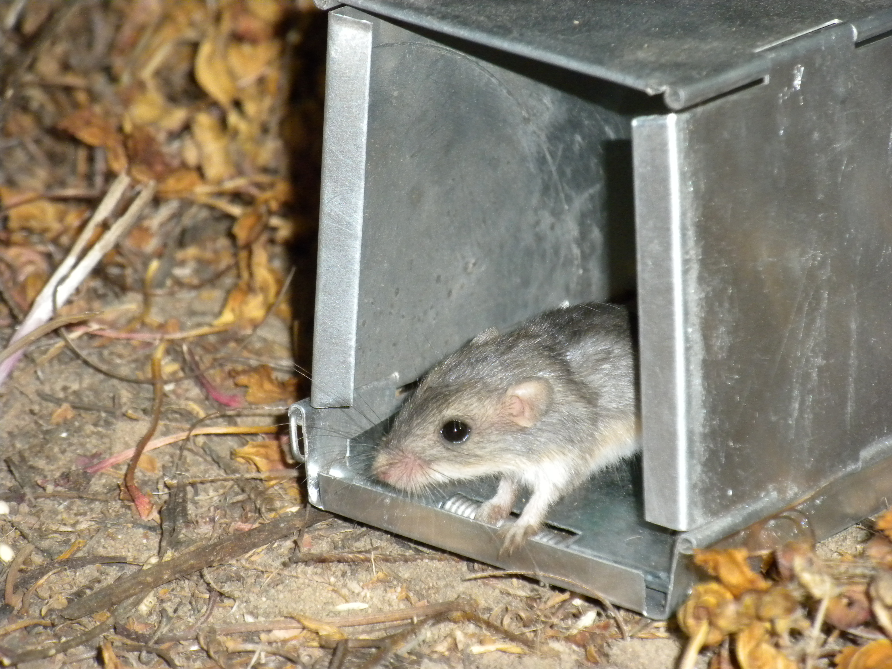

Catch per effort
A within-site catch-rate index tied to trap nights. Useful for comparison; not density or absolute abundance.
Meet the tagged animals inside America’s longest-running continental field observatory—and see exactly when a capture becomes evidence, an index, or an estimate.
Free to explore · No account required · Field definitions stay attached

No canned tour. Pick a living question and the tracker takes you to the right evidence.
Open a tagged animal’s dossier and trace every recorded encounter across nights, plots, and years.
02Compare catch-per-effort and minimum-known-alive; use model estimates only where the data support them.
03Read the community by species, season, plot, body size, and the cadence of recapture.
The tracker keeps effort, detection, identity, and uncertainty visible so a memorable animal never becomes a misleading headline.
Trap nights supply the denominator. More sampling is not automatically more animals.
Species, tag, body measurements, plot, date, and handling context stay connected.
A tag turns separate captures into an individual history—without inventing movement between observations.
Indices appear with definitions; model-based abundance is withheld when sparse data cannot carry it.
A within-site catch-rate index tied to trap nights. Useful for comparison; not density or absolute abundance.
The animals known from capture histories to have been alive in a period. A minimum, not a full census.
Shown only when recapture information can support estimation. No plausible-looking number is substituted for missing evidence.
Where and when animals were handled, which individuals returned, and how supported community or population signals vary within the reviewed record.
The exact number of every animal present, unobserved movement paths, or causal ecosystem change from capture records alone.
NEON product DP1.10072.001 · 178,216 reviewed capture/handling rows · 93,169 tagged individuals · 145 species · 46 sites · 2013–2024. Last production verification: July 18, 2026. Counts and scope are pinned to the app’s reviewed bundle and verification record.
Small mammals are one piece of a ten-explorer evidence system. The Driver brings the suite together without pretending distinct measurements are interchangeable.
Open the NEON Driver CascadeSuite synthesis & provenanceStart at a NEON site, open a tag history, and decide for yourself what the field record can support.